Daftar Isi
Pendahuluan
1.1 Tujuan Pedoman
Pedoman penggunaan ini disusun sebagai panduan teknis resmi bagi seluruh pengguna Sistem Informasi Pencatatan Nama Bayi Baru Lahir di lingkungan Dinas Kependudukan dan Pencatatan Sipil (Dukcapil) Kabupaten Ngada. Dokumen ini memberikan penjelasan lengkap mengenai cara mengakses, mengoperasikan, dan memanfaatkan seluruh fitur yang tersedia dalam sistem sepanjang tahun 2026.
Pedoman ini ditujukan agar setiap pengguna dapat memahami alur kerja sistem, melakukan pencatatan data kelahiran dengan benar, serta memanfaatkan fitur-fitur pendukung seperti verifikasi data, pengelolaan dokumen, analitik, dan pengaduan secara efektif.
1.2 Sasaran Pengguna
Sistem ini dirancang untuk dua peran utama, yaitu:
| Peran | Deskripsi | Akses Utama |
|---|---|---|
| Admin Dukcapil | Petugas Dinas Dukcapil Kabupaten Ngada yang bertanggung jawab mengelola sistem secara keseluruhan | Verifikasi data, kelola pengguna, analitik, log audit, pengaduan, manajemen NIK |
| Operator Puskesmas | Petugas Puskesmas di wilayah Kabupaten Ngada yang bertugas mencatat data kelahiran bayi | Input data kelahiran, unggah dokumen, riwayat data, pengaduan |
1.3 Deskripsi Singkat Sistem
Sistem Informasi Pencatatan Nama Bayi Baru Lahir merupakan aplikasi berbasis web yang dibangun untuk digitalisasi proses pencatatan nama bayi baru lahir di Kabupaten Ngada. Sistem ini menghubungkan petugas di Puskesmas (sebagai input data) dengan Dinas Dukcapil (sebagai pengelola dan verifikator data), sehingga proses pencatatan menjadi lebih efisien, akurat, dan terintegrasi.
Fitur utama sistem meliputi pencatatan data kelahiran, pengunggahan dokumen pendukung (SKL dan KK), verifikasi data oleh admin, manajemen NIK bayi, dashboard analitik, serta sistem pengaduan untuk menangani kendala operasional.
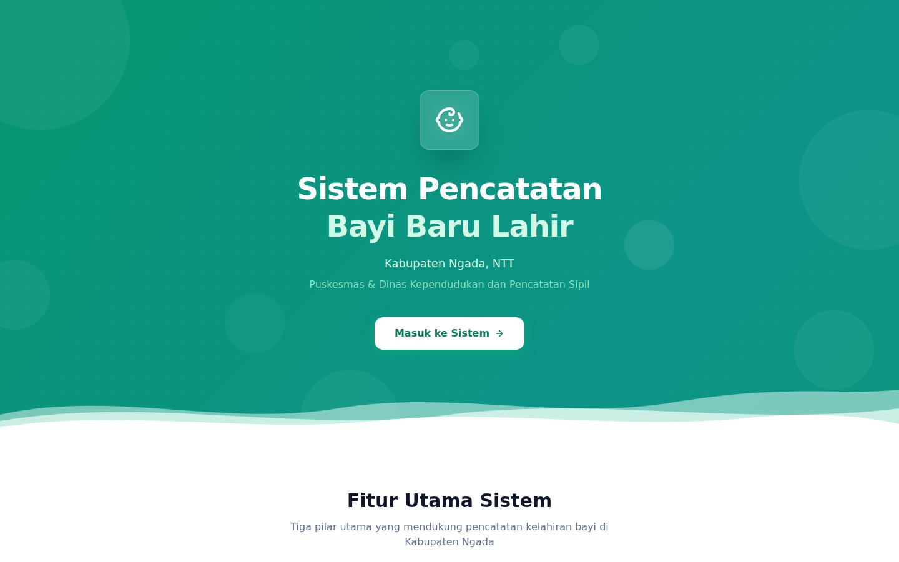
Gambar 1.1 — Halaman Utama (Landing Page) Sistem Informasi Pencatatan Nama Bayi Baru Lahir
Tampilan halaman utama menunjukkan identitas resmi sistem dengan logo Dinas Dukcapil Kabupaten Ngada, deskripsi singkat layanan, serta tombol navigasi untuk masuk ke sistem.
Cara Mengakses Sistem
2.1 Alamat URL Sistem
Sistem Informasi Pencatatan Nama Bayi Baru Lahir dapat diakses melalui alamat URL berikut:
https://pencatatan-bayi.vercel.app
Pastikan Anda mengetikkan alamat URL dengan benar pada kolom alamat browser. Sistem ini bersifat cloud-based sehingga dapat diakses dari mana saja selama terhubung dengan internet.
2.2 Browser yang Didukung
Untuk pengalaman penggunaan yang optimal, sistem direkomendasikan untuk diakses menggunakan browser berikut:
| Browser | Versi Minimum | Status |
|---|---|---|
| Google Chrome | 90+ | Didukung Penuh |
| Mozilla Firefox | 88+ | Didukung Penuh |
| Microsoft Edge | 90+ | Didukung Penuh |
| Safari | 14+ | Didukung Penuh |
2.3 Halaman Login dan Penjelasan Komponen
Berikut adalah tampilan halaman login yang akan muncul saat pengguna mengakses sistem:
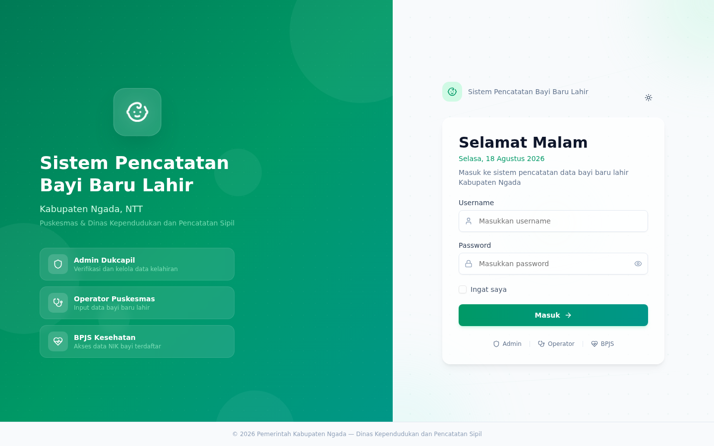
Gambar 2.1 — Halaman Login Sistem Informasi Pencatatan Nama Bayi Baru Lahir
Keterangan bagian-bagian pada halaman login:
- Logo dan Judul Sistem — Menampilkan identitas resmi aplikasi beserta nama sistem di bagian atas halaman login.
- Kolom Username — Masukkan nama pengguna (username) yang telah diberikan oleh Admin Dukcapil. Contoh:
admin_dukcapiluntuk admin, atau akun operator sesuai nama puskesmas. - Kolom Password — Masukkan kata sandi yang sesuai dengan akun Anda. Kata sandi bersifat sensitif, pastikan tidak dibagikan kepada pihak lain.
- Tombol Masuk — Klik tombol “Masuk” untuk mengirimkan kredensial dan mengakses sistem.
2.4 Informasi Akun Default
| Peran | Username | Keterangan |
|---|---|---|
| Admin Dukcapil | admin_dukcapil | Akun utama untuk mengelola seluruh fitur sistem |
| Operator Puskesmas | Disesuaikan per puskesmas | Akun dibuat oleh Admin untuk setiap Puskesmas |
2.5 Langkah Login Step-by-Step
- Buka browser yang didukung (disarankan Google Chrome).
- Ketikkan alamat
https://pencatatan-bayi.vercel.apppada kolom alamat browser, lalu tekan Enter. - Halaman login akan ditampilkan. Masukkan username Anda pada kolom yang tersedia.
- Masukkan password Anda pada kolom password.
- Klik tombol “Masuk”.
- Jika kredensial benar, Anda akan diarahkan ke halaman Dashboard sesuai peran Anda (Admin atau Operator).
- Jika terjadi kesalahan, periksa kembali username dan password, lalu coba lagi.
Panduan Admin Dukcapil
Peran Admin Dukcapil memiliki akses penuh terhadap seluruh fitur sistem. Admin bertanggung jawab untuk mengelola data pengguna, memverifikasi data kelahiran, mengelola puskesmas, serta memantau seluruh aktivitas sistem melalui log audit dan analitik.
3.1 Dashboard Admin
Dashboard Admin merupakan halaman utama yang ditampilkan setelah Admin Dukcapil berhasil login. Halaman ini menyajikan ringkasan statistik penting dan aksi cepat yang dibutuhkan admin dalam mengelola sistem sehari-hari.
Gambar 3.1 — Tampilan Dashboard Admin Dukcapil dengan statistik ringkasan dan aksi cepat
Pada Dashboard Admin, Anda dapat melihat informasi berikut:
- Statistik Ringkasan — Jumlah total data kelahiran, data yang sudah diverifikasi, data menunggu verifikasi, jumlah puskesmas terdaftar, dan jumlah pengguna aktif.
- Aksi Cepat — Tombol akses cepat untuk navigasi ke fitur yang sering digunakan, seperti verifikasi data, kelola pengguna, dan lihat laporan.
- Data Terbaru — Daftar data kelahiran terbaru yang masuk ke sistem untuk memantau aktivitas terkini.
3.2 Verifikasi Data Kelahiran
Salah satu tugas utama Admin Dukcapil adalah melakukan verifikasi terhadap data kelahiran yang diinput oleh Operator Puskesmas. Proses ini memastikan data yang masuk sudah lengkap dan valid sebelum diproses lebih lanjut.
Langkah Verifikasi Data:
- Buka menu “Data Kelahiran” atau klik notifikasi data baru di dashboard.
- Anda akan melihat daftar data dengan status Menunggu Verifikasi.
- Klik data yang ingin diperiksa untuk melihat detail lengkapnya.
- Periksa kelengkapan data termasuk dokumen pendukung (SKL dan KK) yang diunggah.
- Jika data benar dan lengkap, klik tombol “Verifikasi” untuk menyetujui.
- Jika ada kesalahan, klik “Tolak” dan berikan keterangan alasan penolakan. Operator akan menerima notifikasi untuk memperbaiki data.
3.3 Download Data Baru dan Register
Admin Dukcapil dapat mengunduh data kelahiran dalam format Excel untuk keperluan pelaporan, arsip, atau koordinasi dengan instansi terkait.
Langkah Download Data:
- Buka menu “Data Kelahiran” di sidebar navigasi.
- Gunakan filter untuk memilih data yang ingin diunduh (berdasarkan tanggal, status, atau puskesmas).
- Klik tombol “Download Excel” atau ikon unduh yang tersedia.
- File Excel akan otomatis terunduh ke perangkat Anda.
- Buka file Excel untuk melihat data dalam format tabel yang terstruktur dan siap cetak.
3.4 Kelola Pengguna (Users)
Admin Dukcapil memiliki wewenang untuk mengelola akun pengguna sistem, termasuk membuat akun baru bagi Operator Puskesmas, mengubah informasi pengguna, serta menonaktifkan akun yang tidak lagi digunakan.
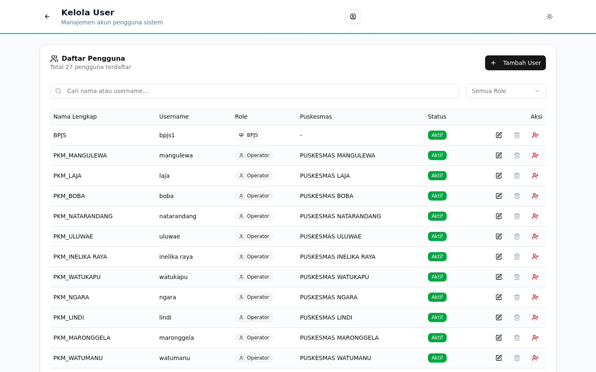
Gambar 3.2 — Halaman Kelola Pengguna untuk menambah, mengedit, dan menghapus akun pengguna
Fitur yang tersedia:
- Tambah Pengguna — Klik tombol “Tambah Pengguna” untuk membuat akun baru. Isi formulir yang muncul termasuk nama lengkap, username, password, dan pilih peran serta puskesmas terkait.
- Edit Pengguna — Klik ikon edit pada baris pengguna yang ingin diubah informasinya.
- Hapus Pengguna — Klik ikon hapus untuk menghapus akun pengguna. Tindakan ini memerlukan konfirmasi.
- Pencarian — Gunakan kolom pencarian untuk menemukan pengguna tertentu berdasarkan nama atau username.
3.5 Kelola Puskesmas
Menu ini memungkinkan Admin Dukcapil untuk mengelola data Puskesmas yang terdaftar dalam sistem. Admin dapat menambahkan Puskesmas baru, mengedit informasi Puskesmas, serta menonaktifkan Puskesmas yang sudah tidak aktif.
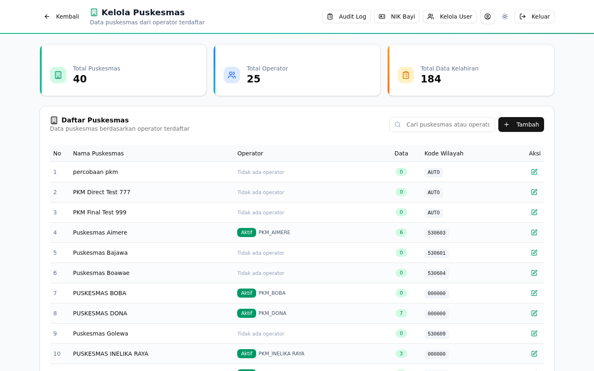
Gambar 3.3 — Halaman Kelola Puskesmas untuk mengelola data fasilitas kesehatan terdaftar
Langkah Mengelola Puskesmas:
- Buka menu “Kelola Puskesmas” di sidebar navigasi.
- Daftar seluruh Puskesmas yang terdaftar akan ditampilkan dalam tabel.
- Klik “Tambah Puskesmas” untuk mendaftarkan Puskesmas baru dengan mengisi nama, alamat, dan kontak.
- Klik ikon edit untuk mengubah informasi Puskesmas yang sudah terdaftar.
- Klik ikon hapus untuk menghapus Puskesmas dari sistem (dengan konfirmasi).
3.6 Manajemen NIK Bayi
Fitur Manajemen NIK Bayi memungkinkan Admin Dukcapil untuk menambahkan, memperbarui, atau menghapus Nomor Induk Kependudukan (NIK) yang terhubung dengan data bayi yang sudah terverifikasi. NIK bayi biasanya diperoleh setelah proses penerbitan dokumen kependudukan selesai.
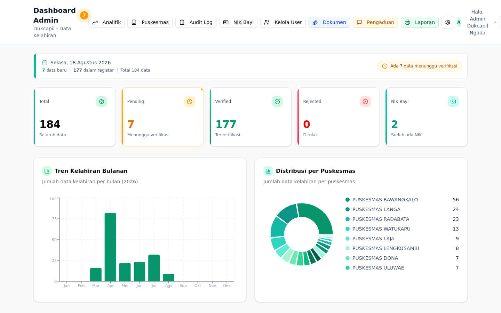
Gambar 3.4 — Halaman Manajemen NIK Bayi untuk menambah dan mengelola NIK bayi terverifikasi
Langkah Mengelola NIK Bayi:
- Buka menu “Manajemen NIK Bayi” di sidebar navigasi.
- Daftar bayi yang sudah diverifikasi akan ditampilkan. Pilih bayi yang ingin ditambahkan NIK-nya.
- Klik tombol “Tambah NIK” atau ikon edit pada baris data yang sesuai.
- Masukkan NIK bayi yang telah diterbitkan oleh Dukcapil (16 digit angka).
- Klik “Simpan” untuk menyimpan perubahan.
- Untuk menghapus NIK yang salah, klik ikon hapus dan konfirmasi penghapusan.
3.7 Log Audit
Log Audit menyajikan catatan seluruh aktivitas yang terjadi dalam sistem. Fitur ini sangat penting untuk transparansi, akuntabilitas, dan keamanan data. Admin dapat melihat siapa yang melakukan aksi apa, kapan, dan dari mana.
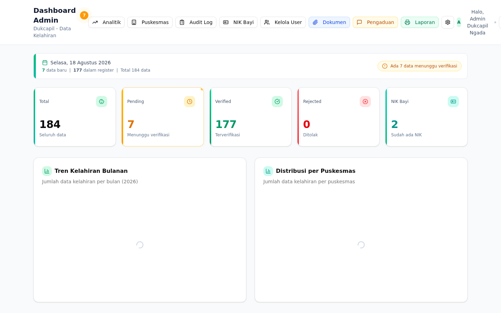
Gambar 3.5 — Halaman Log Audit yang mencatat seluruh aktivitas pengguna dalam sistem
Informasi yang tercatat dalam Log Audit:
- Waktu (Timestamp) — Tanggal dan jam presisi ketika aksi dilakukan.
- Pengguna — Nama pengguna yang melakukan aksi.
- Aksi (Action) — Jenis aktivitas seperti CREATE, UPDATE, DELETE, LOGIN, VERIFY, dan lainnya.
- Detail — Deskripsi lengkap tentang apa yang dilakukan pengguna.
- IP Address — Alamat IP perangkat yang digunakan untuk mengakses sistem.
3.8 Analitik dan Statistik
Fitur Analitik menyajikan visualisasi data dalam bentuk grafik dan tabel statistik yang membantu Admin Dukcapil dalam mengambil keputusan berbasis data. Halaman ini menampilkan tren kelahiran, distribusi per puskesmas, dan ringkasan bulanan/tahunan.
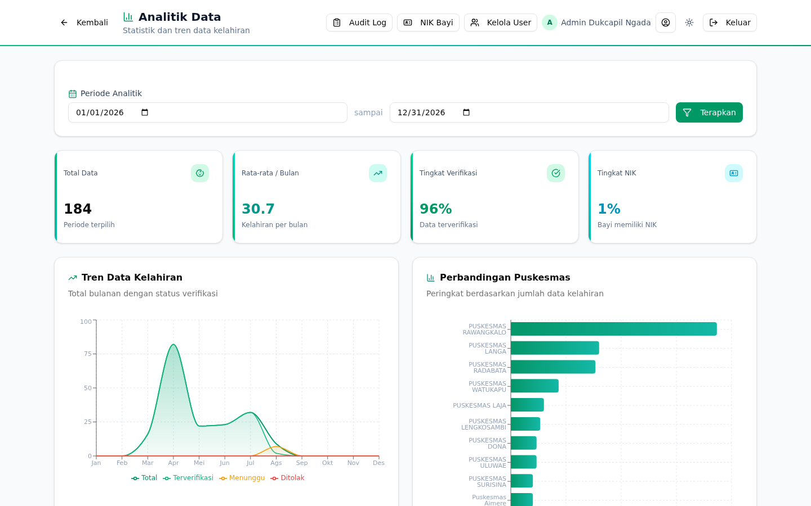
Gambar 3.6 — Halaman Analitik dan Statistik dengan grafik tren kelahiran dan distribusi data
Jenis analitik yang ditampilkan:
- Grafik Tren Kelahiran — Menampilkan jumlah kelahiran per bulan dalam bentuk grafik batang atau garis.
- Distribusi per Puskesmas — Menampilkan persentase kontribusi masing-masing Puskesmas terhadap total data kelahiran.
- Statistik Status Verifikasi — Pie chart atau bar chart yang menunjukkan proporsi data berdasarkan status verifikasi.
- Ringkasan Angka — Total kelahiran, rata-rata per bulan, dan perbandingan dengan periode sebelumnya.
3.9 Kelola Dokumen
Menu Kelola Dokumen memungkinkan Admin Dukcapil untuk melihat dan mengelola seluruh dokumen pendukung yang diunggah oleh Operator Puskesmas, termasuk Surat Keterangan Lahir (SKL) dan Kartu Keluarga (KK).
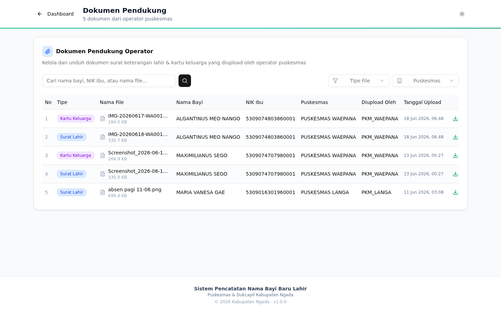
Gambar 3.7 — Halaman Kelola Dokumen untuk melihat dan mengunduh dokumen pendukung
Fitur yang tersedia:
- Daftar Dokumen — Tabel yang menampilkan seluruh dokumen yang diunggah, lengkap dengan nama file, jenis dokumen, pengunggah, dan tanggal unggah.
- Preview/Download — Klik pada dokumen untuk melihat preview atau mengunduh file ke perangkat Anda.
- Filter — Filter dokumen berdasarkan jenis (SKL/KK), puskesmas, atau rentang tanggal.
- Hapus Dokumen — Admin dapat menghapus dokumen yang tidak valid atau duplikat.
3.10 Kelola Pengaduan
Admin Dukcapil dapat melihat dan merespons seluruh pengaduan yang diajukan oleh Operator Puskesmas. Fitur ini memungkinkan penanganan masalah operasional secara terstruktur dan terdokumentasi.
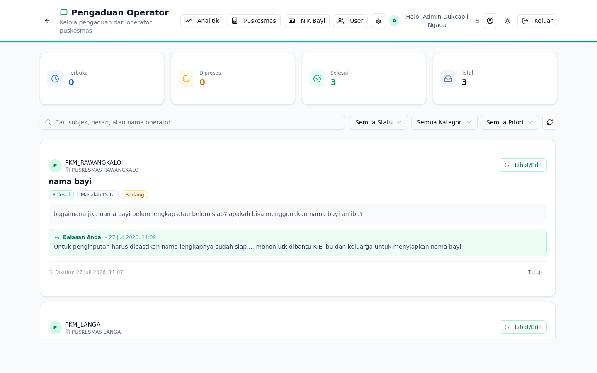
Gambar 3.8 — Halaman Kelola Pengaduan untuk merespons pengaduan dari Operator Puskesmas
Langkah Merespons Pengaduan:
- Buka menu “Kelola Pengaduan” di sidebar navigasi.
- Daftar seluruh pengaduan akan ditampilkan beserta statusnya (Baru, Diproses, Selesai).
- Klik pada pengaduan yang ingin ditangani untuk melihat detailnya.
- Tuliskan balasan atau tanggapan Anda pada kolom respons yang tersedia.
- Perbarui status pengaduan menjadi “Diproses” atau “Selesai” sesuai progres penanganan.
- Klik “Kirim Respons” untuk menyimpan balasan Anda. Operator yang mengajukan pengaduan akan menerima notifikasi.
Panduan Operator Puskesmas
Peran Operator Puskesmas merupakan pengguna utama yang bertugas mencatat data kelahiran bayi baru lahir di wilayah kerja masing-masing Puskesmas. Operator memiliki akses terbatas yang difokuskan pada fungsi pencatatan dan pelacakan data.
4.1 Dashboard Operator
Dashboard Operator menampilkan ringkasan data kelahiran yang dicatat oleh Puskesmas terkait, termasuk statistik singkat, data terbaru, dan visualisasi grafik sederhana.
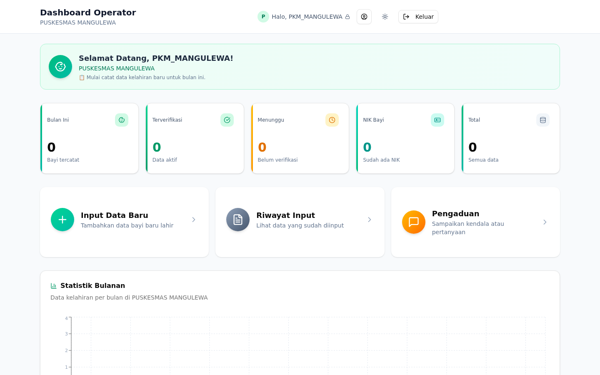
Gambar 4.1 — Tampilan Dashboard Operator Puskesmas dengan statistik dan grafik
Informasi yang ditampilkan pada Dashboard Operator:
- Total Data Puskesmas — Jumlah seluruh data kelahiran yang telah diinput oleh Puskesmas Anda.
- Data Menunggu Verifikasi — Jumlah data yang sudah diinput namun belum diverifikasi oleh Admin Dukcapil.
- Data Terferifikasi — Jumlah data yang telah disetujui oleh Admin.
- Grafik Tren — Visualisasi tren kelahiran di Puskesmas Anda dalam beberapa bulan terakhir.
- Data Terbaru — Daftar 5 data kelahiran terakhir yang Anda input.
4.2 Input Data Kelahiran Baru
Fitur Input Data Kelahiran merupakan fungsi utama bagi Operator Puskesmas. Melalui fitur ini, operator dapat mencatat data lengkap bayi baru lahir beserta informasi orang tua.
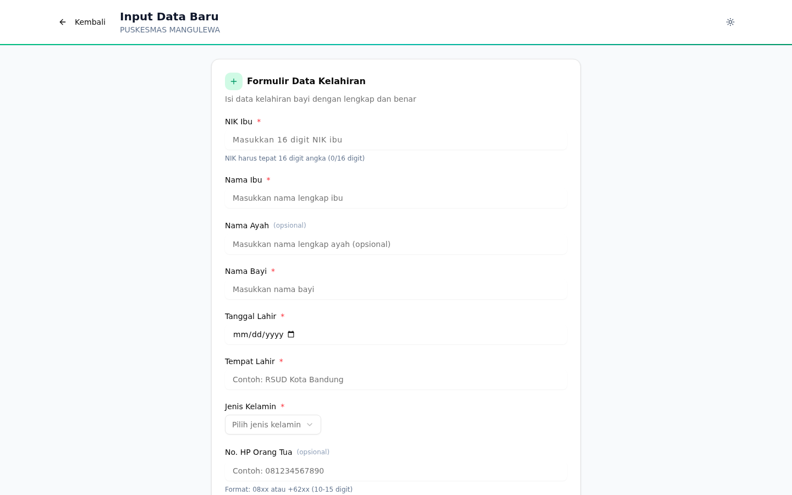
Gambar 4.2 — Formulir Input Data Kelahiran Baru dengan seluruh field yang harus diisi
Field yang harus diisi pada formulir:
| No | Field | Keterangan |
|---|---|---|
| 1 | Nama Bayi | Nama lengkap bayi sesuai yang tertera pada SKL |
| 2 | Tanggal Lahir | Tanggal kelahiran bayi (format: DD/MM/YYYY) |
| 3 | Jenis Kelamin | Laki-laki atau Perempuan |
| 4 | Berat Badan | Berat badan bayi saat lahir (dalam gram) |
| 5 | Panjang Badan | Panjang badan bayi saat lahir (dalam cm) |
| 6 | Nama Ibu | Nama lengkap ibu kandung sesuai KTP |
| 7 | NIK Ibu | Nomor Induk Kependudukan ibu (16 digit) |
| 8 | Nama Ayah | Nama lengkap ayah sesuai KTP |
| 9 | NIK Ayah | Nomor Induk Kependudukan ayah (16 digit) |
| 10 | Alamat | Alamat tempat tinggal keluarga |
Langkah Input Data:
- Buka menu “Input Data Kelahiran” di sidebar navigasi.
- Isi seluruh field yang tersedia pada formulir dengan data yang akurat.
- Periksa kembali semua data yang telah diisi sebelum menyimpan.
- Klik tombol “Simpan” untuk menyimpan data.
- Sistem akan menampilkan konfirmasi bahwa data berhasil disimpan.
- Data akan muncul dengan status Menunggu Verifikasi dan menunggu ditinjau oleh Admin Dukcapil.
4.3 Unggah Dokumen Pendukung (SKL dan KK)
Setelah berhasil menginput data kelahiran, Operator Puskesmas wajib mengunggah dokumen pendukung berupa Surat Keterangan Lahir (SKL) dan Kartu Keluarga (KK) sebagai bukti validitas data.
Ketentuan unggah dokumen:
- Format file: Gambar (JPG, PNG) atau PDF
- Ukuran maksimal: 5 MB per file
- Dokumen yang diperlukan: SKL (wajib) dan KK (wajib)
Langkah Unggah Dokumen:
- Pada halaman detail data kelahiran atau saat input data, cari bagian “Unggah Dokumen”.
- Klik tombol “Pilih File” atau seret dan lepas file ke area unggah.
- Pilih file SKL dari perangkat Anda, lalu lakukan hal yang sama untuk file KK.
- Tunggu proses unggah selesai. Indikator progres akan ditampilkan.
- Pastikan kedua dokumen berhasil diunggah sebelum menutup halaman.
4.4 Riwayat Data
Menu Riwayat Data menampilkan seluruh data kelahiran yang pernah diinput oleh Operator Puskesmas. Operator dapat melihat detail, mengedit, dan menghapus data melalui halaman ini.
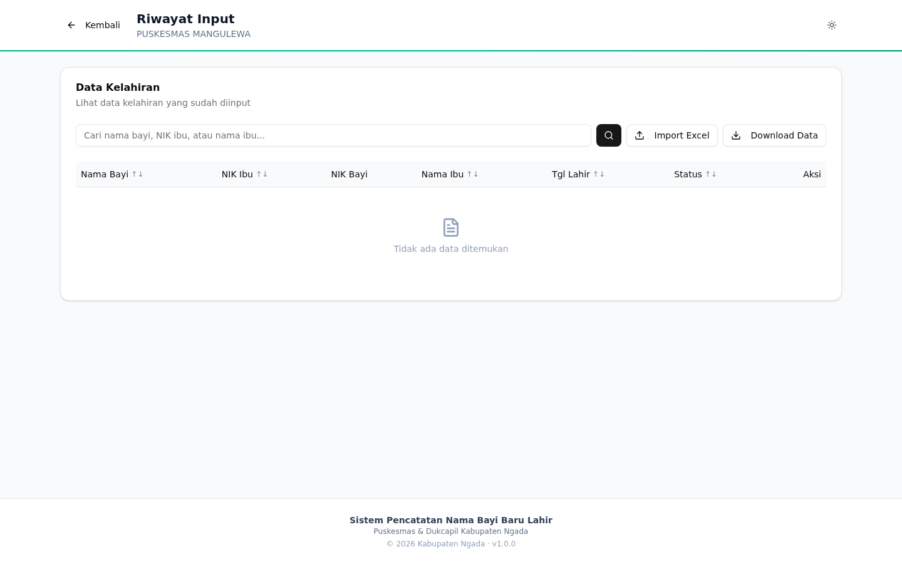
Gambar 4.3 — Halaman Riwayat Data Operator dengan daftar seluruh data kelahiran yang pernah diinput
Fitur yang tersedia:
- Daftar Data — Tabel menampilkan seluruh data kelahiran dengan kolom nama bayi, tanggal lahir, status verifikasi, dan aksi.
- Detail — Klik ikon mata atau nama bayi untuk melihat detail lengkap data.
- Edit — Klik ikon edit untuk mengubah data yang masih berstatus “Menunggu Verifikasi” atau “Ditolak”.
- Hapus — Klik ikon hapus untuk menghapus data (hanya data yang belum diverifikasi).
- Filter dan Pencarian — Gunakan filter status dan kolom pencarian untuk menemukan data tertentu.
4.5 Import Data dari Excel
Operator Puskesmas dapat mengimpor data kelahiran secara massal menggunakan file Excel. Fitur ini berguna jika Puskesmas memiliki catatan data kelahiran yang sudah tersimpan dalam format spreadsheet.
Ketentuan format file Excel:
- Format file:
.xlsxatau.xls - Baris pertama merupakan header kolom sesuai template yang disediakan
- Kolom yang wajib ada: Nama Bayi, Tanggal Lahir, Jenis Kelamin, Berat Badan, Panjang Badan, Nama Ibu, NIK Ibu, Nama Ayah, NIK Ayah, Alamat
- Format tanggal:
DD/MM/YYYY
Langkah Import Data:
- Buka menu “Import Data” di sidebar navigasi.
- Download template Excel yang disediakan oleh sistem sebagai acuan format.
- Isi data kelahiran ke dalam template sesuai format yang ditentukan.
- Klik “Pilih File” dan unggah file Excel yang sudah diisi.
- Sistem akan memvalidasi data. Jika ada kesalahan format, akan ditampilkan pesan error yang menjelaskan baris dan kolom bermasalah.
- Jika validasi berhasil, klik “Konfirmasi Import” untuk menyimpan seluruh data.
4.6 Download Data Puskesmas
Operator Puskesmas dapat mengunduh data kelahiran milik Puskesmas-nya sendiri dalam format Excel. Fitur ini berguna untuk membuat laporan internal atau keperluan koordinasi.
Langkah Download Data:
- Buka menu “Riwayat Data” di sidebar navigasi.
- Gunakan filter untuk menyaring data yang ingin diunduh (berdasarkan status atau rentang tanggal).
- Klik tombol “Download Excel” yang tersedia di bagian atas tabel.
- File Excel akan otomatis terunduh ke perangkat Anda.
4.7 Pengaduan
Operator Puskesmas dapat mengajukan pengaduan jika mengalami kendala dalam menggunakan sistem. Pengaduan akan ditangani oleh Admin Dukcapil secara terstruktur.
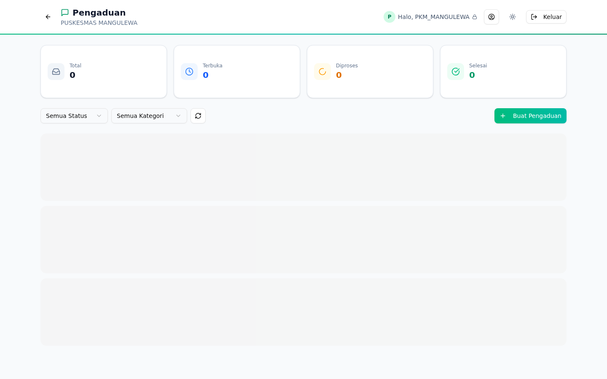
Gambar 4.4 — Halaman Pengaduan Operator untuk membuat dan melacak pengaduan
Langkah Membuat Pengaduan:
- Buka menu “Pengaduan” di sidebar navigasi.
- Klik tombol “Buat Pengaduan Baru”.
- Pilih kategori pengaduan (SISTEM, DATA, PROSES, atau LAINNYA).
- Pilih tingkat prioritas (Rendah, Sedang, atau Tinggi).
- Tuliskan subjek yang menjelaskan masalah secara singkat.
- Tuliskan deskripsi lengkap mengenai masalah yang dialami, termasuk langkah-langkah yang sudah dilakukan.
- Klik “Kirim” untuk mengajukan pengaduan.
Melacak Status Pengaduan:
Pada halaman Pengaduan, Anda dapat melihat daftar seluruh pengaduan yang pernah dibuat beserta statusnya:
- Baru — Pengaduan baru saja dikirim, menunggu ditinjau Admin.
- Diproses — Admin sedang menangani pengaduan Anda.
- Selesai — Pengaduan telah ditangani dan ditutup oleh Admin.
Profil Pengguna
Setiap pengguna (baik Admin maupun Operator) dapat mengelola informasi profil pribadinya melalui menu Profil Pengguna. Halaman ini dapat diakses melalui ikon profil di pojok kanan atas halaman.
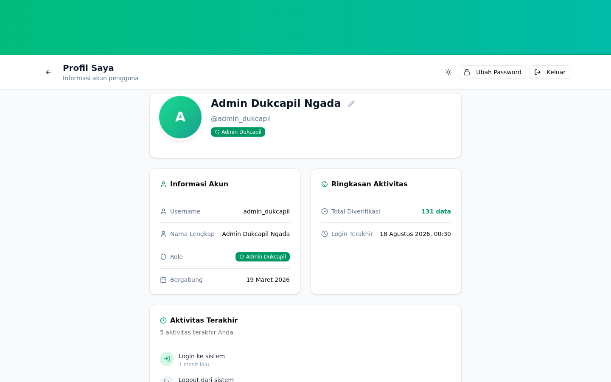
Gambar 5.1 — Halaman Profil Pengguna untuk melihat dan mengedit informasi akun
5.1 Melihat Informasi Profil
Halaman profil menampilkan informasi akun Anda meliputi:
- Nama Lengkap — Nama yang terdaftar pada akun Anda.
- Username — Nama pengguna untuk login (tidak dapat diubah sendiri).
- Peran — Peran Anda dalam sistem (Admin Dukcapil atau Operator Puskesmas).
- Puskesmas — Nama Puskesmas tempat Anda bertugas (khusus Operator).
- Aktivitas Terbaru — Daftar 5 aktivitas terakhir yang Anda lakukan dalam sistem.
5.2 Mengedit Nama
Anda dapat mengubah nama lengkap yang ditampilkan pada akun:
- Buka halaman Profil Pengguna.
- Klik tombol “Edit Profil” atau ikon edit.
- Ubah nama pada kolom Nama Lengkap.
- Klik “Simpan” untuk menyimpan perubahan.
5.3 Mengubah Password
Untuk keamanan akun, disarankan untuk mengubah password secara berkala:
- Buka halaman Profil Pengguna.
- Temukan bagian “Ubah Password”.
- Masukkan password lama Anda.
- Masukkan password baru (minimal 8 karakter, disarankan kombinasi huruf dan angka).
- Konfirmasi password baru dengan mengetik ulang.
- Klik “Simpan Password” untuk menerapkan perubahan.
5.4 Melihat Aktivitas Terbaru
Bagian bawah halaman profil menampilkan daftar aktivitas terbaru yang Anda lakukan dalam sistem, seperti login terakhir, data yang diinput, dan perubahan yang dibuat. Informasi ini membantu Anda melacak riwayat penggunaan akun.
Panduan Tema Tampilan
Sistem menyediakan dua pilihan tema tampilan yang dapat disesuaikan dengan preferensi pengguna, yaitu mode Terang (Light) dan mode Gelap (Dark).
6.1 Lokasi Tombol Tema
Tombol pengaturan tema (theme toggle) terletak di pojok kanan atas halaman, berdekatan dengan ikon profil pengguna. Tombol ini menampilkan ikon matahari (mode terang) atau ikon bulan (mode gelap) sesuai tema yang sedang aktif.
6.2 Cara Mengganti Tema
- Temukan tombol toggle tema di pojok kanan atas halaman.
- Klik tombol tersebut untuk beralih antara mode terang dan mode gelap.
- Tema akan langsung berubah tanpa perlu memuat ulang halaman.
- Pilihan tema Anda akan disimpan otomatis di browser, sehingga saat Anda login kembali, tema yang dipilih akan tetap digunakan.
Pengaduan Sistem
Fitur pengaduan sistem memungkinkan komunikasi terstruktur antara Operator Puskesmas dan Admin Dukcapil dalam menangani kendala operasional. Sistem ini mencatat seluruh percakapan dan memastikan setiap masalah dapat dilacak penyelesaiannya.
7.1 Kategori Pengaduan
Setiap pengaduan harus dikategorikan agar Admin dapat menangani dengan tepat. Berikut adalah kategori yang tersedia:
| Kategori | Deskripsi | Contoh |
|---|---|---|
| SISTEM | Masalah teknis atau bug pada aplikasi | Halaman error, tombol tidak berfungsi, sistem lambat |
| DATA | Masalah terkait data kelahiran | Data tidak ditemukan, NIK salah, duplikasi data |
| PROSES | Masalah terkait alur kerja atau prosedur | Verifikasi lambat, proses import gagal, format tidak sesuai |
| LAINNYA | Masalah yang tidak termasuk kategori di atas | Permintaan fitur baru, saran perbaikan, pertanyaan umum |
7.2 Tingkat Prioritas
| Prioritas | Keterangan | Waktu Respons Target |
|---|---|---|
| Tinggi | Sistem tidak dapat digunakan sama sekali atau data penting hilang | 1x24 jam |
| Sedang | Beberapa fitur bermasalah namun sistem masih dapat digunakan sebagian | 2x24 jam |
| Rendah | Pertanyaan umum, saran, atau masalah minor | 5x24 jam |
7.3 Alur Pengaduan
- Operator membuat pengaduan baru melalui menu Pengaduan.
- Pengaduan berstatus Baru dan masuk ke antrian Admin.
- Admin meninjau pengaduan dan memberikan respons awal, status berubah menjadi Diproses.
- Operator dapat melihat respons Admin dan menambahkan balasan jika diperlukan.
- Jika masalah sudah terselesaikan, Admin mengubah status menjadi Selesai.
7.4 Cara Admin Merespons Pengaduan
Admin Dukcapil merespons pengaduan melalui menu “Kelola Pengaduan” (BAB 3.10). Berikut panduan merespons:
- Baca deskripsi pengaduan dengan saksama dan pahami masalah yang dilaporkan.
- Periksa data terkait di log audit atau menu lain yang relevan.
- Tuliskan respons yang jelas, informatif, dan solutif.
- Perbarui status sesuai progres penanganan.
- Jika masalah memerlukan waktu, berikan estimasi waktu penyelesaian.
Tips dan Troubleshooting
Bab ini menyajikan panduan untuk mengatasi masalah-masalah umum yang mungkin ditemui saat menggunakan sistem.
8.1 Masalah Umum dan Solusinya
| Masalah | Penyebab | Solusi |
|---|---|---|
| Tidak bisa login | Username atau password salah | Periksa kembali kredensial. Jika lupa, hubungi Admin Dukcapil. |
| Halaman blank/putih | Browser tidak kompatibel atau cache rusak | Gunakan Chrome/Edge terbaru. Bersihkan cache browser (Ctrl+Shift+Delete). |
| Data tidak tersimpan | Koneksi internet terputus saat menyimpan | Periksa koneksi internet. Coba kembali simpan data. |
| Upload dokumen gagal | File terlalu besar atau format tidak didukung | Pastikan file maks 5MB dan berformat JPG/PNG/PDF. |
| Import Excel gagal | Format kolom tidak sesuai template | Download template terbaru, pastikan header kolom sama persis. |
| Sistem lambat | Koneksi internet lambat atau server sedang sibuk | Tunggu beberapa saat dan coba lagi. Gunakan koneksi yang stabil. |
| Sesi berakhir | Tidak ada aktivitas selama 15 menit | Login kembali. Data yang belum disimpan akan hilang. |
| Data tidak muncul di riwayat | Filter aktif atau data belum tersinkronisasi | Periksa filter. Refresh halaman dengan menekan F5. |
8.2 Kompatibilitas Browser
Jika Anda mengalami masalah tampilan atau fungsi yang tidak bekerja, hal pertama yang harus dilakukan adalah memastikan browser Anda kompatibel:
- Disarankan: Google Chrome versi 90 ke atas (pengalaman terbaik).
- Alternatif: Mozilla Firefox 88+, Microsoft Edge 90+, atau Safari 14+.
- Tidak didukung: Internet Explorer (sudah tidak dikembangkan), versi browser yang sangat lama.
8.3 Session Timeout (15 Menit)
Sistem memiliki keamanan berupa session timeout selama 15 menit tanpa aktivitas. Jika Anda tidak melakukan aksi apa pun selama 15 menit, sesi akan otomatis berakhir dan Anda akan diminta untuk login kembali.
8.4 Persyaratan Upload File
| Spesifikasi | Ketentuan |
|---|---|
| Format gambar | JPG, JPEG, PNG |
| Format dokumen | |
| Ukuran maksimal per file | 5 MB (5.000 KB) |
| Resolusi gambar | Minimal 300x400 piksel (agar teks terbaca) |
| Kualitas | Dokumen harus jelas terbaca, tidak buram, dan tidak terpotong |
8.5 Persyaratan Format Import Excel
Untuk berhasil melakukan import data dari Excel, pastikan file memenuhi ketentuan berikut:
- File berformat
.xlsx(Excel 2007 ke atas) atau.xls(Excel 97-2003). - Baris pertama berisi header kolom yang sesuai dengan template resmi sistem.
- Tidak ada kolom tambahan selain yang ada di template.
- Format tanggal menggunakan format
DD/MM/YYYY(contoh: 15/03/2026). - NIK ibu dan ayah harus berupa angka 16 digit tanpa spasi atau karakter khusus.
- Berat badan dalam satuan gram (angka saja, tanpa “gram” atau “g”).
- Panjang badan dalam satuan cm (angka saja, tanpa “cm”).
- Tidak ada baris kosong di antara data.
Kontak dan Bantuan
Jika Anda memerlukan bantuan tambahan yang tidak tercakup dalam pedoman ini, silakan hubungi pihak terkait berikut:
9.1 Kontak Admin Dukcapil
Untuk pertanyaan teknis, permintaan akun baru, reset password, atau bantuan operasional sistem, silakan hubungi Admin Dukcapil melalui:
- Akun Admin Sistem:
admin_dukcapil - Jam Operasional: Senin – Jumat, pukul 08.00 – 16.00 WITA
Atau gunakan fitur Pengaduan di dalam sistem untuk mengajukan pertanyaan secara terstruktur.
9.2 Informasi Sistem
| Item | Informasi |
|---|---|
| Nama Sistem | Sistem Informasi Pencatatan Nama Bayi Baru Lahir |
| Instansi Pengelola | Dinas Kependudukan dan Pencatatan Sipil Kabupaten Ngada |
| Tahun Dokumen | 2026 |
| Versi Pedoman | 1.0 |
| Jenis Dokumen | Lampiran Laporan Resmi |
| Peran Pengguna | Admin Dukcapil, Operator Puskesmas |
9.3 Panduan Tambahan
- Pastikan selalu menggunakan versi terbaru dari browser yang didukung.
- Simpan pedoman ini sebagai referensi saat menghadapi kendala.
- Ajukan pengaduan melalui sistem untuk setiap masalah yang memerlukan bantuan Admin.
- Laporkan setiap dugaan bug atau masalah keamanan segera kepada Admin.